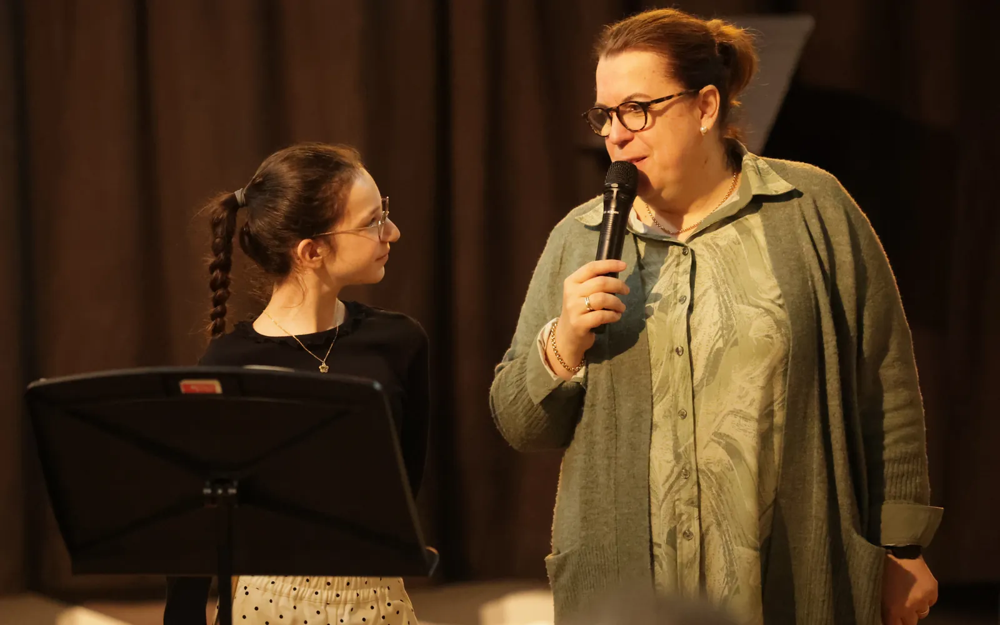
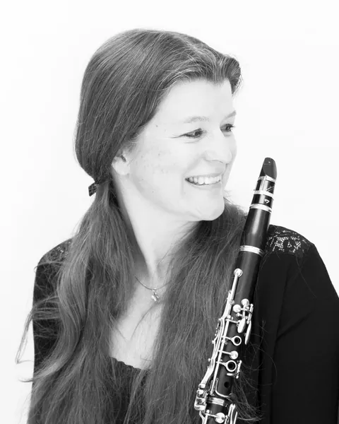
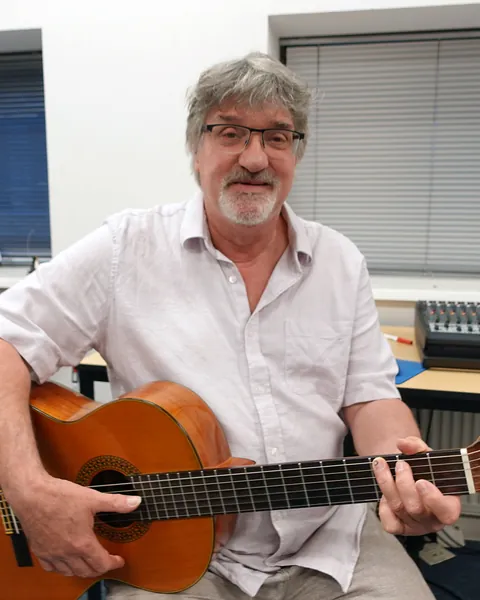
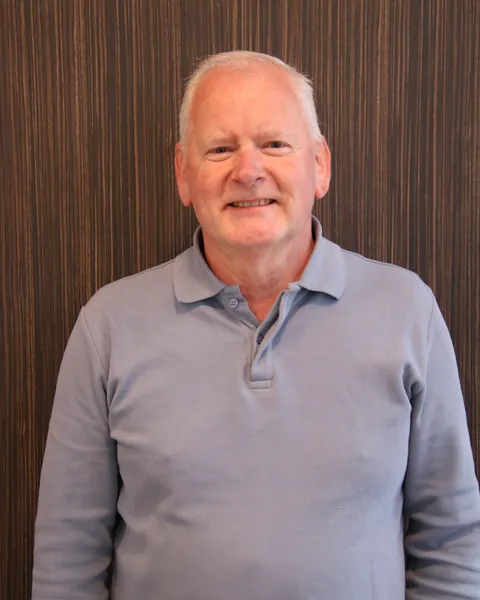
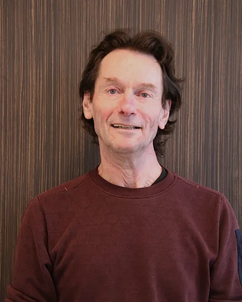
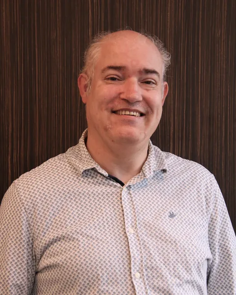
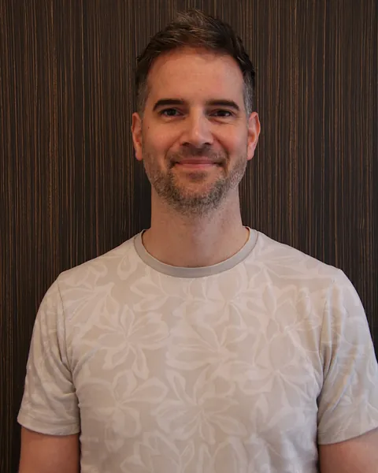
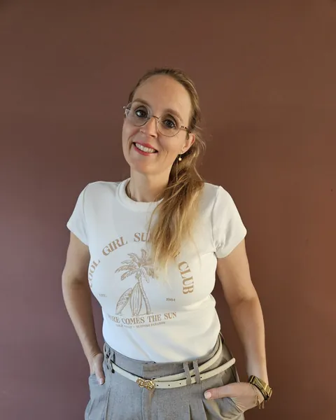

Saxofoon
Ludwig Attevelt
Studeerde saxofoon en orkestdirectie aan het conservatorium in Tilburg, allebei cum laude.
Sint-MichielsgestelBerlicum
Dé muziekschool van de gemeente Sint-Michielsgestel · les in vier kernen
21 musici en dansers, opgeleid aan conservatoria en academies, die zelf spelen in orkesten, bands, koren en theater.
Plan een proefles met een docent
Studeerde saxofoon en orkestdirectie aan het conservatorium in Tilburg, allebei cum laude.

Groeide op in de harmonie en studeerde aan het Prins Claus Conservatorium in Groningen.

Popdocent van het Rotterdams Conservatorium, met ruim 25 jaar leservaring en vele bandworkshops.

Studeerde in Tilburg en Enschede en geeft al sinds 1988 les in Sint-Michielsgestel.

Speelt solo, in ensembles en orkesten, met concerten van Amsterdam tot Bangkok.

Studeerde viool in Tilburg, Rotterdam en Maastricht en is al ruim 30 jaar viooldocente.

Begon klassiek, raakte verslingerd aan pop en jazz en studeerde aan het conservatorium in Tilburg.
Studeerde musical in Brussel en muziektheater aan de Fontys Hogeschool voor de Kunsten.

Klassiek geschoold trombonist, die het liefst naar bigband luistert.

Studeerde lichte muziek aan het Rotterdams Conservatorium en speelde in bands in allerlei stijlen.
Groeide op in een muzikaal gezin en speelt van sopraan- tot basblokfluit.


Pianodocent, begeleider en muzikaal leider van verschillende koren in de regio.

Opgeleid als professioneel danseres. Haar eerste danslessen kreeg ze op haar zesde.
Werd als meisje in een kinderkoor op slag betoverd door de klank van de hobo.

Studeerde aan de Rockacademie in Tilburg en speelt al jaren met Paul van Loon en Andere Snuiters.

Geeft ook de theorielessen voor de muziekexamens.
Voor haar was de dwarsfluit liefde op het eerste gezicht.

Studeerde aan de conservatoria van Tilburg en Arnhem en heeft sinds 2005 een eigen lespraktijk.

Médèz zoekt een trompetdocent. Lees de vacature.
Ben jij een zelfstandige trompetdocent met passie voor pop, klassiek, jazz en HaFa? Je deelt je rooster zelf in, op zzp-basis.